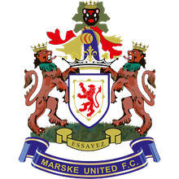

Eight first-team appearances for Marske United across the last two seasons, alongside his U21 football as captain. U21 appearance numbers to follow.
Most recent season first. Appearance numbers, clean sheets and honours slot into each card.
Senior apps confirmed · U21 appearance counts still to come
Player of the season awards, league or cup wins, representative honours — anything Will has picked up goes here. If there's nothing to list yet, this section can be removed before the site goes live.